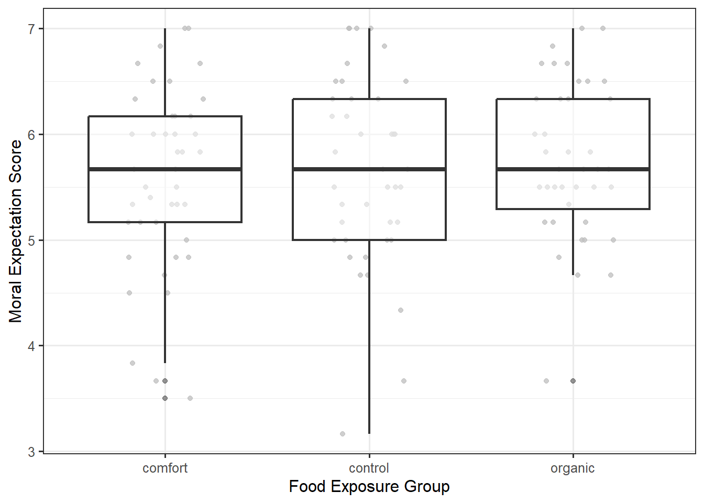

30 Assessing the Modeling Conditions in ANOVA
In this unit we have discussed a model relating a quantitative response to a categorical predictor. For the Organic Food Case Study, our model has had the form
\[(\text{Moral Expectations})_i = \mu_1 (\text{Comfort})_i + \mu_2 (\text{Control})_i + \mu_3 (\text{Organic})_i + \varepsilon_i,\]
where we use the same indicator variables defined in Chapter 27. Further, we considered three conditions on the distribution of the error term:
- The error in the moral expectation score for one individual is independent of the error in the moral expectation score for all other individuals.
- The variability in the error for the moral expectation score within a group is the same for any food exposure group.
- The error in the moral expectation score follows a Normal distribution.
However, while we imposed all three of these conditions in Chapter 29, we could have developed an empirical model for the null distribution of the standardized statistic only enforcing the first of these conditions on the distribution of the error. Unfortunately, we cannot simply state conditions and then proceed blindly. In order to rely on the p-values and confidence intervals produced from any modeling procedure, the data must be consistent with the conditions imposed.
In this section, we discuss how we assess these conditions qualitatively. Just as we saw in Chapter 20, while the conditions are placed on the error terms, they are assessed using residuals.
30.1 Residual
The difference between the observed response and the predicted response (estimated deterministic portion of the model). Specifically, the residual for the \(i\)-th observation is given by
\[(\text{Residual})_i = (\text{Response})_i - (\text{Predicted Mean Response})_i\]
where the “predicted mean response” is often called the predicted, or fitted, value.
Residuals mimic the noise in the data generating process.
For the ANOVA model, the predicted mean response is the observed sample mean of each group.
Big Idea
The conditions are placed on the error term, but they are assessed with residuals.
30.2 Assessing the Independence Condition
The error in the moral expectation score for one individual is independent of the error in the moral expectation score for all other individuals.
Generally, independence is assessed by considering the method in which the data was collected and considering the context with a discipline expert. By carefully considering the manner in which the data was collected, we can typically determine whether it is reasonable that the errors in the response are independent of one another. Some key things to consider when examining the data collection process:
- Are there repeated observations made on the same subject? This often suggests some type of relationship between the responses and therefore would not be consistent with errors being independent. In particular, look for blocking.
- Is the response measured over time (time-series) such as daily temperature over the course of a month? Time-series data often exhibits strong period-to-period relationships suggesting the errors are not independent. For example, if it is hot today, it will probably be hot tomorrow as well.
- Is there a learning curve in how the data was collected? Learning curves again suggest some dependence from one observation to the next. For example, a new nurse may become better at collecting pulse readings with more practice over time.
- Measurement devices which are failing over time will introduce a dependence from one observation to the next. Imagine a bathroom scale that begins to add an additional pound each day. Then, being above average weight one day will most likely lead to an above average weight the next, due primarily to the measurement device. Generally, independence is assessed through the context of the data collection scheme. By carefully considering the manner in which the data was collected, we can typically determine whether it is reasonable that the errors in the response are independent of one another. Some key things to consider when examining the data collection process:
These last three points illustrate a particular deviation from our condition of independence in which two observations collected close together in time are related. When we know the order in which the data was collected, we can assess whether the data tends to deviate from the condition of independence in this manner. This is done graphically through a time-series plot of the residuals. If two errors were unrelated, then the value of one residual should tell us nothing about the value of the next residual. Therefore, a plot of the residuals over time should look like noise (since residuals are supposed to mimic the noise in the model). If there are any trends, then it suggests the data is not consistent with independence.
30.3 Time-Series Plot
A time-series plot of a variable is a line plot with the variable on the y-axis and time on the x-axis.
Graphically Assessing the Independence Condition
If the data is consistent with the independence condition, we would not expect to see a trend in the location or spread in a time-series plot of the residuals. Note that this graphic can only be used if the order in which the data was collected is known, and the order indicates some natural timing.
For the Organic Food Case Study, participants were assessed simultaneously within a large lecture. Therefore, there is no ordering in time to be concerned about, and a time-series plot of the residuals would not be useful here. Since we cannot rely on a graphic, we can only rely on what we know about how the data was collected. Students worked individually on the questionnaire; there was nothing in the data description of how the data was collected that would lead us to believe that one student’s response would be impacted by any other student’s response. And, no blocking was implemented. Our review of the data collection methods suggests it is reasonable to assume that the errors in the moral expectation score are unrelated to one another.
30.4 Assessing Homoskedasticity
The variability of the error in the moral expectation within each food exposure group is the same across all food exposure groups.
We want the variability in the errors within a group to be the same across the groups. We can do this by examining side-by-side boxplots (or jitter plots, etc.) of the residuals within each of the groups. Figure 30.1 shows the residuals for each individual across the various groups. Notice that the boxes for each group are roughly the same size; that is, the interquartile ranges are similar. This suggests that the variability within each group is similar from one group to the next. That is, the data is consistent with the constant variance condition.
There is a second (equivalent) approach to assessing this condition. From the model for the data generating process, we see that the response for any individual is some constant plus noise; therefore, the distribution of the responses for any group is simply a shifted version of the distribution of the errors within the same group. If the variability in the errors for each response is the same, then the variability of the response must be the same for each group. Therefore, we can also examine the side-by-side boxplots (or jitter plots, etc.) of the response instead of the residuals. Figure 30.2 shows the moral expectation score for each individual across the various groups. Just as in the previous graphic, the interquartile ranges are similar for each of the three groups indicating the data is consistent with this condition. The benefit of the first approach is that the residuals will always be centered around 0 within each group; this allows for easy side-by-side comparisons; when looking at the observed response, the data need not be aligned across the groups.

Finally, there is a third (equivalent) approach to assessing this condition — assessing it just as we did for linear regression models. We can create a plot of the residuals against the fitted values. Figure 30.3 shows the residuals plotted against the fitted values. Just as in the previous graphic, the interquartile ranges are similar for each of the three groups indicating the data is consistent with this condition.
This does not have the same pattern as what we might have expected from Chapter 20. Remember, our study only had three groups; therefore, the deterministic portion of the model for the data generating process is only comparing three groups, and as a result, it can only predict one of three values for the average response. Each vertical “slice” in Figure 30.3 represents the residuals from one of those three predicted responses.
Warning
The order of the groups when plotting the response against the groups need not be the same as the order when plotting the residuals against the fitted values.
Warning
When plotting the residuals against the fitted values in ANOVA, if two groups are similar, but these differ from the other groups, the vertical “slices” can be nearly on top of one another, making it difficult to assess the constant variance condition. It is for this reason we prefer one of the first two methods discussed in this section.
Graphically Assessing the Constant Variance Condition
If the data is consistent with the constant variance condition, there should be no trends in the spread of the residuals (or the response) across each group.
30.5 Assessing Normality
The errors in the moral expectation score follows a Normal distribution.
If the errors follow a Normal distribution, then we would expect the residuals to mimic a sample taken from a Normal distribution. As introduced in Chapter 20, we emphasize the Normal probability plot for assessing the Normality condition.
30.6 Probability Plot
Also called a “Quantile-Quantile Plot”, a probability plot is a graphic for comparing the distribution of an observed sample with a theoretical probability model for the distribution of the underlying population. The quantiles observed in the sample are plotted against those expected under the theoretical model.
Graphically Assessing the Normality Condition
If the data is consistent with the normality condition, the Normal probability plot of the residuals should exhibit a straight line with any deviations appearing to be random. Systemic deviations from a straight line indicate the observed distribution does not align with the proposed model.
Figure 30.4 shows the probability plot for the residuals from the Organic Food Case Study.
Overall, the points do tend to follow a straight line. There are some deviations from a linear relationship at each end of the plot, but the deviations are not extreme and do not appear to be systematic. Deviations in the tails are common, especially with larger datasets. And with naturally less data in the tails, it can become more difficult to establish a pattern. We are generally not concerned unless these tails form a part of a larger pattern of deviating from the linear trend. We believe these residuals are consistent with the errors having a Normal distribution.
30.7 General Tips for Assessing Assumptions
First discussed in Chapter 20, we want to remember four things that should be kept in mind when assessing conditions:
- We should not spend an extraordinary amount of time examining any one residual plot; we might convince ourselves of patterns that do not exist. We are looking for major deviations from our expectations.
- We can never prove a condition is satisfied; we can only determine whether the data is consistent with a condition or whether it is not consistent with a condition.
- Any condition required for a particular analysis should be assessed.
- Transparency is crucial.